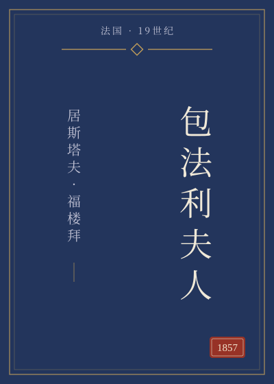

包法利夫人
一、基本信息
| 作者 | 福楼拜 |
|---|---|
| 成书/出版 | 1856年《巴黎杂志》连载（10月1日—12月15日），1857年单行本（Britannica） Madame Bovary (novel by Flaubert) — Encyclopaedia Britannica（百科全书） |
| 国别/地区 | 法国 |
| 时代 | 近代 · 19世纪 |
| 体裁 | 长篇小说（现实主义） |
| 语言 | 法语 |

二、创作背景
出版与审判（Britannica）：1856年10月1日—12月15日在《巴黎杂志》连载；1857年两卷本出版；随后被法国政府以'伤风败俗'起诉，福楼拜 narrow 无罪开释——审判'推高了人们对这本书的兴趣'（heightened interest in the book）。同一年波德莱尔《恶之花》亦受审——1857年被称为'法国文学审判之年'（通说待核）。
素材来源：鲁昂医生德拉马尔（Delamare）夫人私通与自杀的真实案件（通说待核）——福楼拜之父的学生；福楼拜'花了五年时间反复重写'（Britannica：spent some five years on Madame Bovary, constantly rewriting it）。
'包法利主义'（bovarysme）：以幻想替代现实的自我欺骗——贡比埃热（Jules de Gaultier）19世纪末以小说人物命名的哲学概念（通说待核）。
三、内容脉络
查理·包法利——平庸而善良的乡村医生——娶了农场主之女爱玛。她修过修道院教育，满脑来自廉价小说的'激情、幸福'的幻象（Britannica：She seeks romance in sentimental novels）。
永镇生活：乡间的平庸（丈夫的平庸手术'跷跷板手术'致残 patient——通说细节）令爱玛窒息。地主罗尔多夫（Rodolphe）引诱并抛弃她（'brain fever'脑热病，Britannica），随后与实习生莱昂（Léon）重逢偷情。
沉沦：爱玛'拥抱抽象——激情、幸福——而忽视物质现实'（Britannica：She 'embraces abstractions—passion, happiness' while ignoring material reality），以勒乐的高利贷支撑排场，债台高筑。
结局：查封令贴上门框，爱玛四处求告无门（罗尔多夫、莱昂、公证人皆拒绝），吞砒霜自杀（Britannica：swallows arsenic and dies painfully）；查理至死不知情，发现情书后郁郁而终（Britannica：Charles, unaware of the affairs, dies after finding her love letters）；女儿贝尔特被送进棉纺厂做工（Britannica：daughter Berthe ends up working in a cotton factory）。
四、主要人物表
| 人物 | 身份 | 说明 |
|---|---|---|
| 爱玛·包法利 | 农场主之女·医生之妻 | '19世纪法国文学最著名的女主人公'（Britannica：Emma is called the best-known heroine of 19th-century French literature）——浪漫幻想的殉道者 |
| 查理·包法利 | 乡村医生 | 善良、平庸、迟钝——爱玛悲剧的另一面（他的'平庸'同样是社会的产物） |
| 罗尔多夫 | 地主猎艳者 | 以三十四封情书套路引诱、以一篮杏子告别——冷血 |
| 莱昂 | 实习生 | 怯懦的同谋者 |
| 勒乐 | 绸缎商·高利贷者 | 消费社会的代理人：以'诗意商品'诱捕爱玛 |
| 郝麦 | 药剂师 | 科学—进步话语的庸俗化身，终获荣誉勋章——全书的终极反讽（通说） |
五、主题与艺术特点
- 浪漫幻想的现实破产：'浪漫主义—现实主义'的文本内战——爱玛读了太多小说而死于小说（通说解读）。
- 消费社会的原型：勒乐的分期付款、丝绸窗帘与'巴黎时髦'——现代消费主义在1850年代乡村的雏形（通说）。
- 平庸之恶：全镇没有一个'坏人'，悲剧由平庸、懦弱与贪婪的合力完成（通说）。
- 艺术特点：'le mot juste'文体、自由间接引语（爱玛视角与叙述的滑动）、农展会'平行蒙太奇'（获奖名单与偷情对话交替——通称'交叉蒙太奇'，通说待核）。
六、影响与评论
- Britannica（Madame Bovary 条目）：'ushered in a new age of realism in literature'（开创文学现实主义新纪元）、'the principal masterpiece of realism'（现实主义的主要杰作）。
Madame Bovary (novel by Flaubert) — Encyclopaedia Britannica（百科全书） - Britannica：福楼拜'transformed a commonplace story of adultery into an enduring work of profound humanity'（把平凡的通奸故事化为深刻人性的不朽之作）。
Madame Bovary (novel by Flaubert) — Encyclopaedia Britannica（百科全书） - Britannica（Flaubert 条目，Barzun 撰）：影响左拉自然主义；'prime mover of the realist school of French literature'。
Gustave Flaubert — Encyclopaedia Britannica (by Jacques Barzun)（百科全书） - 20世纪回响：纳博科夫讲稿的分析、乔伊斯《尤利西斯》的莫莉与爱玛的对照——现代小说以'爱玛问题'自我定义（通说，待核）。
Gustave Flaubert — Encyclopaedia Britannica (by Jacques Barzun)（百科全书）
七、阅读建议
- 文体极简（'一个字不多一个字不少'的错觉），需要慢读品味'le mot juste'。
- 1940年代的法国外省经济（公证人、期票）与人物评价要放在消费史语境。
- 爱玛需同情而非道德审判——福楼拜的设计正是'无人可判'。
- 周克希译《包法利夫人》（上海译文出版社）：现代译本。
- 许渊冲译本（译林出版社）：另一选择。
- 李健吾译《包法利夫人》（人民文学出版社）：经典译本（译者亦为福楼拜研究者）。
先读上卷（爱玛的幻想与婚姻）与'农展会'一场（上卷第9章前后，通说）→ 通读 → 精读结尾三页（爱玛之死）与郝麦获勋的最后一句 → 对照《安娜·卡列尼娜》看'出轨女性'的两种写法。
八、待核实
- 连载与出版日期（Britannica 已给出10月1日/12月15日与1857年）与初版书局（Brockhaus？Michel Lévy说）待核。
- 德拉马尔案件原型的考订（René Descharmes 研究）待核。
- 李健吾译本的出版信息待核。
- '农展会交叉蒙太奇'的章节定位待核。
本页主要来源
- Madame Bovary (novel by Flaubert) — Encyclopaedia Britannica（百科全书）
- Gustave Flaubert — Encyclopaedia Britannica (by Jacques Barzun)（百科全书）
福楼拜的其他收录作品：包法利夫人